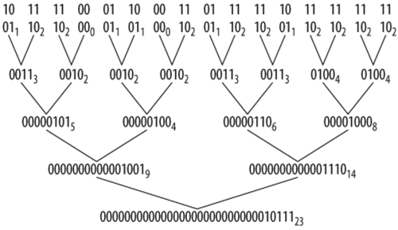
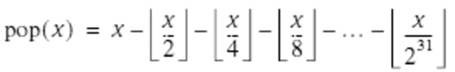

10.2. Divide and Conquer
Another interesting and useful way to compute the population count of a word is based on the "divide and conquer" paradigm. This algorithm might be devised by reasoning, "Suppose I had a way to compute the population count of a 16-bit quantity. Then I could run that on the left and right halves of the 32-bit word, and add the results, to obtain the population count of the 32-bit word." This strategy won't pay off if the basic algorithm must be run sequentially on the two halves and it takes time proportional to the number of bits being analyzed, because it would then take 16k + 16k = 32k units of time, where k is the constant of proportionality, plus another instruction for the addition. But if we can somehow do the operation on the two halfwords in parallel, there will be an improvement from, essentially, 32k to 16k + 1.
To efficiently compute the population count of two 16-bit quantities, we need a way to do it for 8-bit quantities, and to do 4 of them in parallel. Continuing this reasoning, we need a way to compute the population count of 2-bit quantities, and to do 16 of them in parallel.
The algorithm to be described in no way depends on running operations on separate processors, or on unusual instructions such as the SIMD[*]instructions found on some computers. It uses only the facilities usually found on a conventional uniprocessor RISC or CISC.
[*] Single-instruction, multiple-data instructions are instructions that operate on multiple fields (such as bytes or halfwords) of a computer word in parallel. For example, an 8-bit SIMD add might add the corresponding bytes of two words without propagating the carry from one byte to the next.
The plan is illustrated in Figure 10-1.
Figure 10-1. Counting 1-bits, "divide and conquer" strategy
The first line in Figure 10-1 is the word x for which we wish to count the number of 1-bits. Each 2-bit field of the second line contains the count of the number of 1-bits in the 2-bit field immediately above. The subscripts are the decimal values of these 2-bit fields. Each 4-bit field in the third line contains the sum of the numbers in two adjacent 2-bit fields of the second line, with the subscripts showing the decimal values, and so forth. The last line contains the number of 1-bits in x. The algorithm is executed in log2(32) = 5 steps, where each step contains some shifting and masking instructions to do the addition of adjacent fields.
The method illustrated in Figure 10-1 may be committed to C code as follows:
x = (x & 0x55555555) + ((x >> 1) & 0x55555555); x = (x & 0x33333333) + ((x >> 2) & 0x33333333); x = (x & 0x0F0F0F0F) + ((x >> 4) & 0x0F0F0F0F); x = (x & 0x00FF00FF) + ((x >> 8) & 0x00FF00FF); x = (x & 0x0000FFFF) + ((x >>16) & 0x0000FFFF);
(Constants beginning with 0x in C are hexadecimal.) The first line uses (x >> 1) & 0x55555555 rather than the perhaps more natural (x& 0xAAAAAAAA) >> 1 because the code shown avoids generating two large constants in a register. This would cost an instruction if the machine lacks the and not instruction. A similar remark applies to the other lines.
Clearly the last and is unnecessary because x >> 16 must begin with 16 0-bits, so the and does not alter the value of x >> 16. Other ands may be omitted when there is no danger that a field's sum will carry over into the adjacent field. And there is a way to code the first line that uses one less instruction. This leads to the simplification shown in Example 10-1, which executes in 21 instructions and is free of branches and memory references.
Example 10-1. Counting 1-bits in a word
int pop(unsigned x) {
x = x - ((x >> 1) & 0x55555555);
x = (x & 0x33333333) + ((x >> 2) & 0x33333333);
x = (x + (x >> 4)) & 0x0F0F0F0F;
x = x + (x >> 8);
x = x + (x >> 16);
return x & 0x0000003F;
}
|
The first assignment to x is based on the first two terms of the formula:

Here we must have x  0. By treating x as an unsigned integer, this equation can be implemented with a sequence of 31 shift right immediates of 1, and 31 subtracts. The procedure of Example 10-1 uses the first two terms of this on each 2-bit field, in parallel. I leave the proof of this equation to the reader.
0. By treating x as an unsigned integer, this equation can be implemented with a sequence of 31 shift right immediates of 1, and 31 subtracts. The procedure of Example 10-1 uses the first two terms of this on each 2-bit field, in parallel. I leave the proof of this equation to the reader.
Unfortunately, the code of Example 10-1 has lost most of the regularity and elegance of the code from which it was derived. A consequence of this is that it is no longer immediately clear how to extend the code to a 64-bit machine. But it's hard to pass up all those opportunities to save instructions!
Divide and conquer is an important technique that should be near the top of every programmer's bag of tricks. And that goes for computer logic designers, too. Other applications of divide and conquer are the well-known technique of binary search, a sorting method known as Quicksort, and a method for reversing the bits of a word.